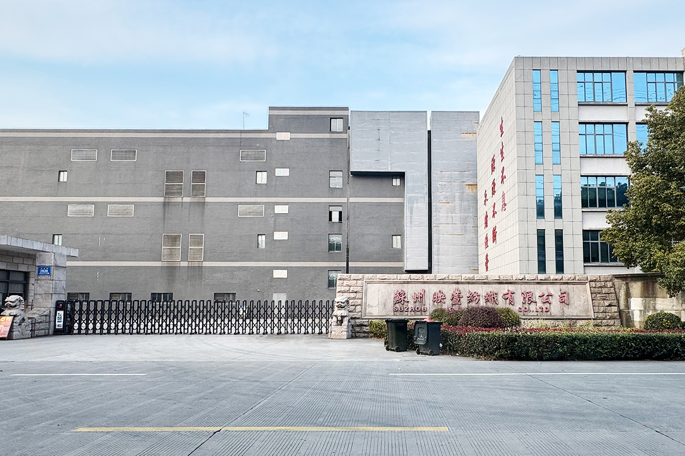
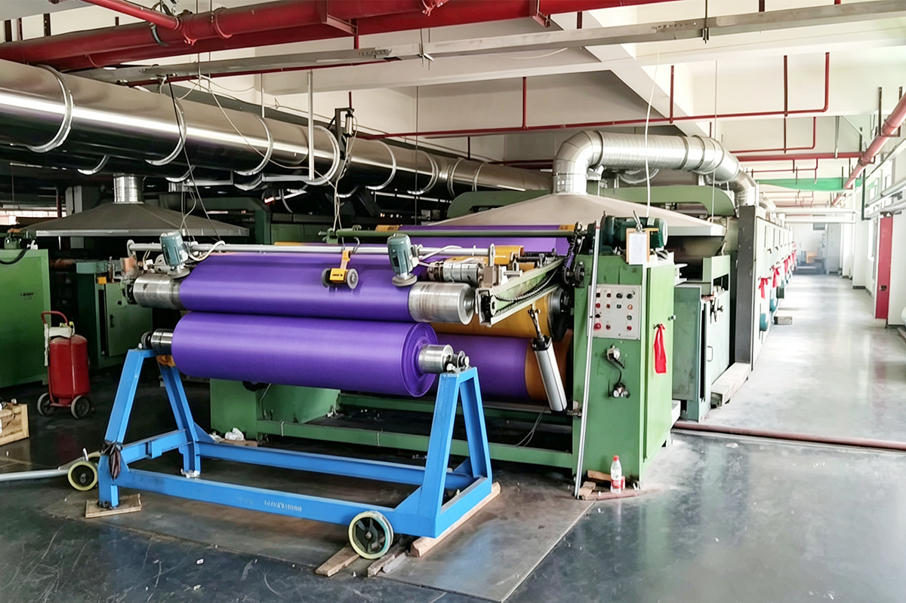
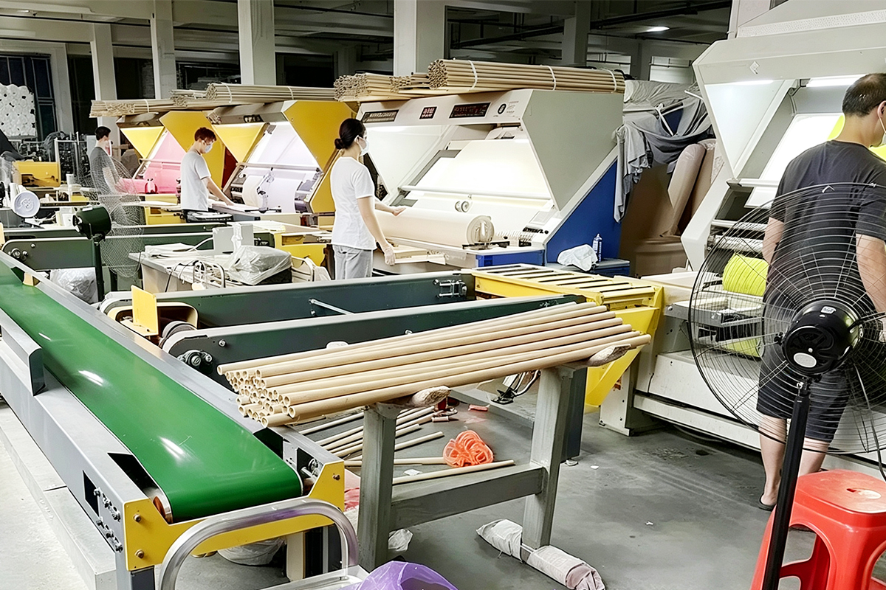
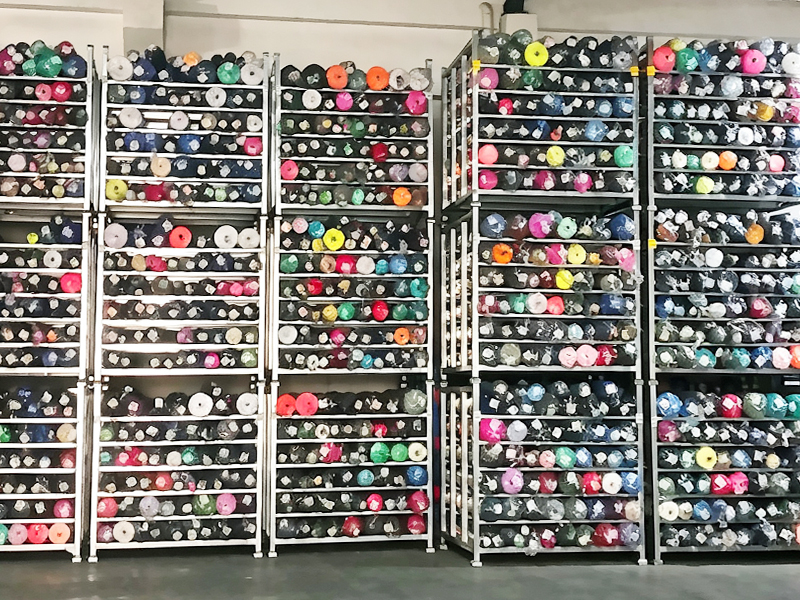

Fabric Categories
Custom Orders
China's Textile Hub
MOQ — No Minimum
Browse products organized by what you make — not by technical specs. Click any card for full details.
Every fabric can be customized with one or more finishing processes to meet your exact requirements.



We're not traders. We're manufacturers. Yingxuan Textile operates its own production line in Shengze, Suzhou — the town that produces more woven fabric than anywhere else on the planet. Every order goes straight from our floor to your door.
90% of what we ship is custom. You send us a spec sheet or a swatch. We match the weave, weight, finish, and color. No guesswork. No "close enough." You get exactly what you asked for — or we redo it.
Small enough to care, big enough to deliver. We don't need a 10,000-meter minimum to start a relationship. Send us a trial order. If the quality checks out, we scale together.
Your order is made here, not subcontracted to a third party.
We don't push stock. We build to your spec from yarn up.
Dyeing, coating, laminating, printing — one roof, one team.
Serving Europe, Russia, and Asia. Documentation, packaging, shipping — handled.

We know you need to touch the fabric before you trust the factory. Here's how it works.
Send a spec sheet, a photo of your target fabric, or mail us a physical swatch. The more detail, the closer we match on the first try.
Lab-dip for color matching takes 3–5 days. Custom weave or finish might take 5–7. We'll confirm the timeline before we start.
Samples ship via DHL, FedEx, or your preferred carrier. Most destinations receive within 5–7 business days.
Happy with the sample? We move to bulk production. Need adjustments? We iterate until it's right — at no extra charge for the second round.
No third-party certification yet? We're honest about that. Here's what we do instead.
If your project requires OEKO-TEX, REACH, or other formal certifications, we can arrange third-party testing. Tell us upfront and we'll include it in the quote.
Send us your requirements, specifications, or a sample photo — we'll get back to you within 24 hours.